What is SHED?
SHED is short for Stonehearth Editor. It is written in C# using WinForms, although some of its editors are made with CEF, and it also uses some Python scripts.
Setup SHED
We now offer a SHED build bundled with the game. It might not be always up-to-date and still has some bugs. You can find it inside your Stonehearth installation folder:
- If you installed the game with the Humble Bundle installer, this will normally be at
C:\Program Files (x86)\Stonehearth. - If you have installed it via Steam, then the mods folder will be at
C:\Program Files (x86)\Steam\steamApps\common\Stonehearth.
Alternatively, if you want to download and compile the latest SHED version from our public repository, follow these steps:
- Get a Visual Studio version (minimum VS 2014). If you have Unity, you might have installed already the Community version of Visual Studio, which is free. Otherwise you can find it here. This IDE takes very long to download and install, so be sure you want to use SHED despite its bugs (you can always make your mods with any text editor).
- Download the SHED code from here. Click in the "Clone or Download" button and save it in some folder in your computer.
- Open Visual Studio and go to File->Open->Project/Solution. Find the StonehearthEditor.sln file where you downloaded the code.
- Select either Debug or Release and x86 or 64 bit (depending on your computer's architecture). Click on the Start button or in Build->Build Solution.
- Once it has finished compiling, you can either run it from VS with the Start button, or find the exe in the respective folder.
Additional setup
If you want to use the auto-localization feature (which automatically prepares the translation file for your mod so that it can be translated to other languages), you must install Python 2.7 in your computer. Make sure it is that version and not Python 3. Then make sure you have the Python path in your environment variables so that your computer knows where to find it.
First time run
Find the StonehearthEditor.exe inside the "shed" folder and run it. The first time you run SHED it will ask you to find your mods directory. Usually you would select the "mods" folder inside your Stonehearth folder. 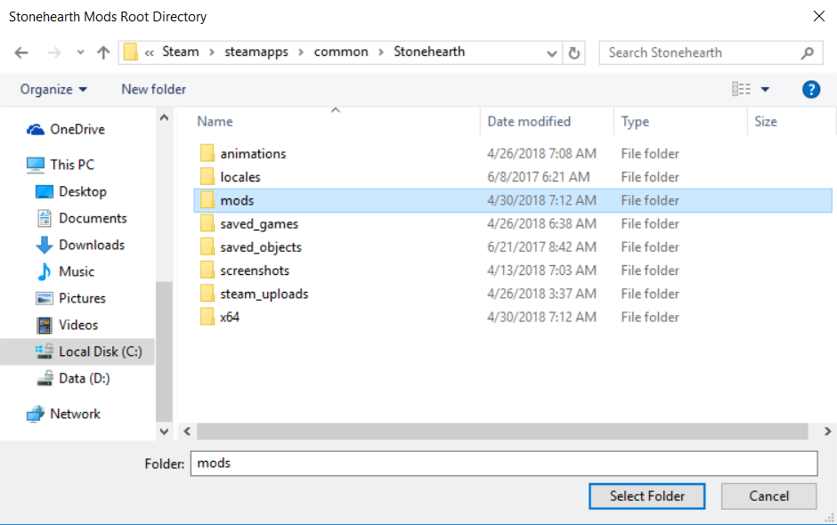
To be able to see and create any content in SHED, the mods must be in plain folders, not in .smod or .zip. If your mods folder contains .smod files, SHED will offer you to uncompress them automatically. After it finishes, you might have to click on "File > Reload" for the mods to be detected by SHED. 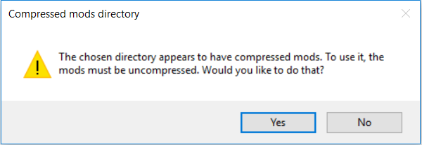 If you manually unzip your mods, make sure the structure is the same than when we run uncompressed mods in the game, otherwise SHED won't know how to load them from the "mods" folder.
SHED might take a little while to appear here and / or to load / reload all the mods, so be patient. 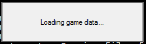
If you're going to upload your mods to the Steam Workshop, you will have already created them from the Mods menu in the game. In that case, after SHED has finished loading the base mods, go to File->Change Mod Directory: 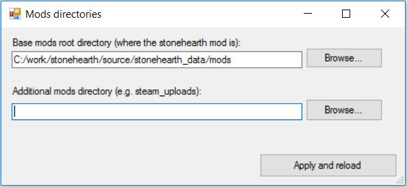
You can browse and select your steam_uploads directory for the second text box, and click on 'Apply and reload', which will reload the mods list. Your mods will appear below the list of base mods, they won't get ordered together.
SHED expects the base mods to always be loaded, and you will also want to have them in order to clone items from them to your mods, so make sure you selected the right mods directory.
Overview
Let's take a look at the interface of SHED. The options in the main menu are:
File:
- New Mod
- Save All
- Reload
- Change Mod Directory
View:
- Net Worth Visualizer
Help:
- About
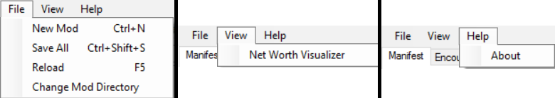
Then we have the different tabs:
- Manifest
- Encounter Designer
- Entity Stats Browser
- Effects Editor
- Recipe Editor
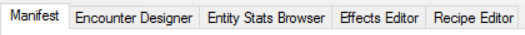
We'll explain some basics of working with SHED here, and specific tutorials will go in the respective section of the modding guide.
SHED basics
The "File > New Mod" option automatically creates a mod folder and a pre-filled manifest for you, but it will be created in the base mods directory (a local mod). This is useful for users that don't use Steam.
 If you use this option, you must enter the namespace of your mod in the text box of the dialog, not the name of your mod.
If you use this option, you must enter the namespace of your mod in the text box of the dialog, not the name of your mod.
For basic modding, we'll be normally working in the Manifest tab. When selecting a node on the treeview, the corresponding files will be opened in different tabs in the central area. 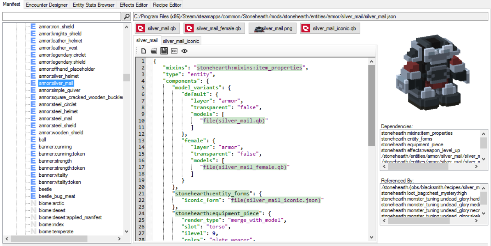 These are the buttons on top of the tabs:
Open File in Text Editor : this will open the file in the text editor that you have assigned by default to open JSON files. You can change your default editor by right-clicking on a JSON file in the Windows File Explorer, clicking on "Properties", clicking on the "Change..." button and selecting the program of your choice. 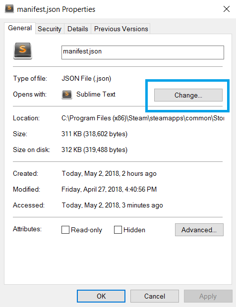
Open Containing Folder : will open the folder where the current file resides.
Save File : make sure to use it often when making changes to this file from within SHED.
Localize This File : this will create the needed locale/en.json file if it doesn't exist, fill it with the appropiate strings and adjust your JSON file to point to them. Instructions on how to setup your file for this option to work correctly here.
This option might not work for all the files, so there could be some times when you will have to setup the localization of your files manually.Preview with Mixins : this will open a window showing how the game will read the file after all the mixins have been applied. It will show comments to highlight the properties that come from mixins. These comments are invalid JSON, so don't copy anything from this window. 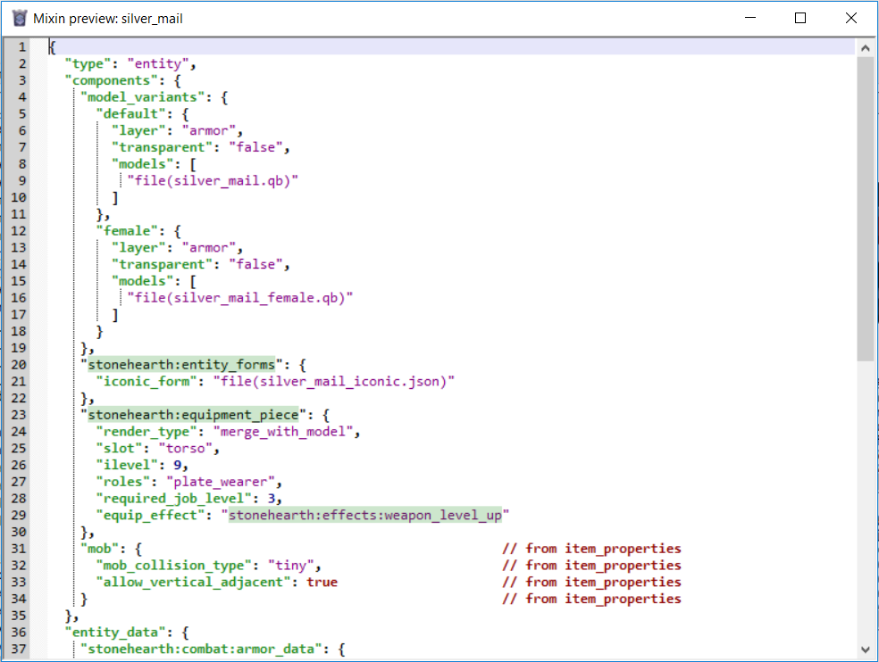
Not all these options appear for all of the files, only the applicable ones will show up.
On top of the tabs for the JSON files, you might also see more buttons. If you have an application assigned to open QB files by default, you can click in the buttons with the Qubicle icon to open the associated QB model. Same for the icons (.png files), though you can usually see them at the column on the right, above the dependencies.
For localization strings, you can Ctrl+click on them and a dialog will appear allowing you to change the text. You can also know which text do they have by hovering over them, which is pretty convenient. 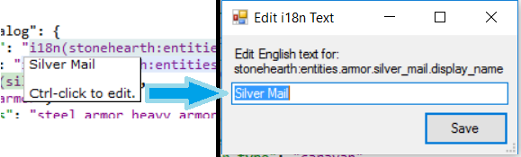
You can right-click the nodes in the treeview on the left to get different options. These options will be different depending on the type of item selected. 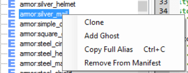
Bear in mind that cloning might still have bugs. Only JSON and Lua files with an alias will appear in the treeview of the Manifest tab.
When there's text with a darker background, you can Ctrl-click on it and it will open the referenced file in your default editor for that file's extension. It's also a way for SHED to tell you that it recognized the text as a reference to an existing file.
SHED will also tell us if there's some problem with one of our files. There will be an icon of a red circle with a cross in the treeview item, and for the tabs once we select it. 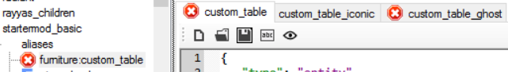
When there are errors, there will be a text in red in the status bar of SHED. Double click on it, and a list of the affected files will show up in a dialog. Clicking on them once will show more info in the text area above, double-clicking on them will also open them in SHED so that you can modify them and fix the errors. 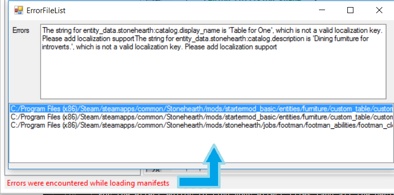
If SHED complains about one of your files, but doesn't refresh the error once you fix it and save those changes, use the "File > Reload" option.
Some workarounds and important info
At the moment this page was last updated:
The recipe editor will only show your recipes if they're from a new crafter that you've made in your mod, unfortunately.
Cloning crafting jobs won't clone the recipes index correctly. You'll have to clone it separately and edit its recipes manually.
For the encounter designer to detect your campaigns, you must have created your own "gm:index" alias on your mod (SHED doesn't detect mixintos nor overrides).
If you think a file should have updated because you saved it but SHED doesn't seem to notice, reload from the File menu.
For the effect editor to find your effect files (and all the derived files, like cubemitters, etc.), you must have set them up like in the stonehearth mod (same directories under "data" and "data/horde").
Bear in mind that drastically editing files outside of SHED while SHED is open and listing them might cause it to crash, especially if what you did was deleting the files or moving them.
Some troubleshooting tips
If SHED becomes unresponsive, don't click on it. Let it run for a little while. There are many actions that cause it to reload a huge amount of files, and it's not optimized for that. So many times it will take some time to load or refresh.
If an error pops up besides SHED becoming unresponsive, you can try to click on "Continue". But if it still feels unstable, try to restart it. Worst case scenario: if you can't close SHED, open the Task Manager, right click on the "StonehearthEditor" process and click on "End Task".
If the Effects editor looks strange, and you can't use the CEF editor on the right side because it glitches, make sure that your monitor's display settings do not have a zoom higher / lower than 100%. Setting it to 100% and restarting SHED should get rid of that bugginess and allow you to use the effects editor comfortably.